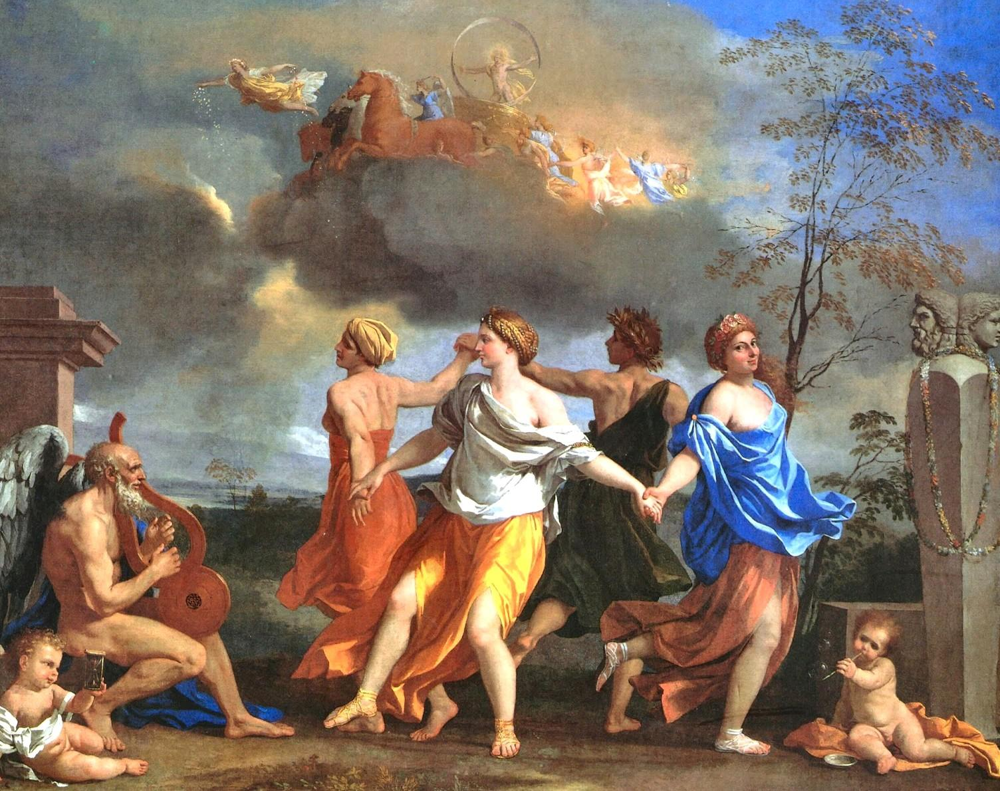
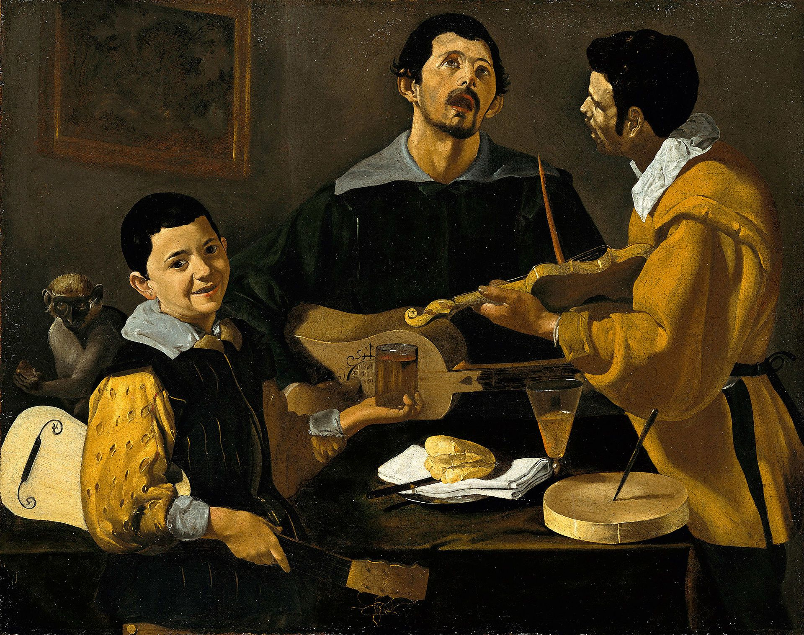
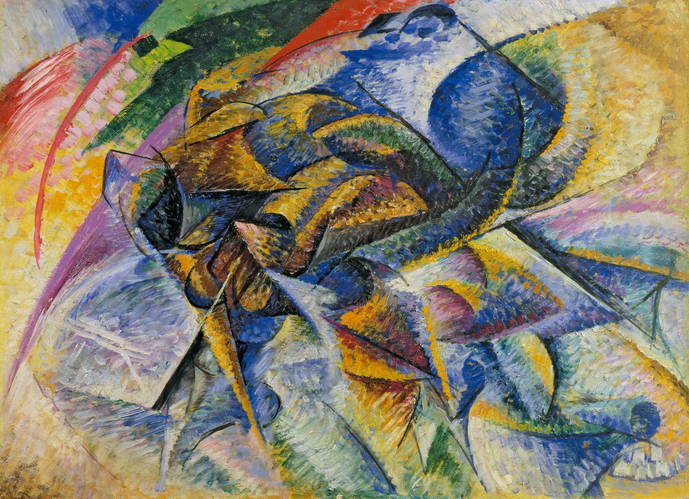

Descubre la historia mediante el arte
Barroco

Lección de anatomía del Dr. Nicolaes Tulp

Aquiles descubierto por Ulises y Diómedes

Diana y Endimión
La danza de la vida humana
Tres músicos

El triunfo de David
Impresionismo

La noche estrellada
Impresión, salida de sol
Meules (almiares, deshielo)
Bain à la Grenouillère

Día de verano
La estación de Saint Lazare
Renacimiento

El nacimiento de venus

Las bodas de Caná

Venus dormida

La creación de Adán
La flagelación

Descendimiento de la cruz
Surrealismo
Los amantes

La persistencia de la memoria
La traición de las imágenes

El hijo del hombre

Los Elefantes
La lámpara filosófica
Futurismo
Dinamismo de un ciclista

Bridge: Landscape from Four Points of Viewo

States of Mind II: Those Who Go
Sobrevolando la ciudad
Alcanzar el sol

Bombardeo aéreo